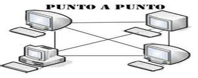
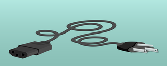
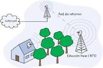

Respondamos algunas preguntas frecuentes comunes sobre la red de ordenadores.
| Red de Área Personal (PAN): Conecta dispositivos cerca de una persona, como un teléfono y un portátil. |
| Red de Área Local (LAN): Conecta dispositivos en un área pequeña, como una oficina o un edificio. |
| Red de Área Metropolitana (MAN): Conecta dispositivos en una ciudad o área metropolitana. |
| Red de Área Amplia (WAN): Conecta dispositivos en un área geográfica grande, como un país o el mundo. |
| Red de Área de Almacenamiento (SAN): Conecta dispositivos de almacenamiento de datos. |
Una red de ordenadores se refiere a dispositivos de computación interconectados que pueden intercambiar datos y compartir recursos entre sí. Los dispositivos de la red utilizan un sistema de reglas, llamados protocolos de comunicaciones, para transmitir información a través de tecnologías físicas o inalámbricas.
| Topología de bus: Todos los dispositivos están conectados a un único cable central. | |
| Topología de estrella: Todos los dispositivos se conectan a un nodo central como un switch o hub. | |
|
Topología de anillo: Los dispositivos forman un círculo cerrado. |
| Topología de malla: Todos los nodos están interconectados entre sí. | |
| Topología híbrida: Combinación de dos o más topologías. | |
|  | Topología punto a punto: Conexión directa entre dos nodos. |
|
Cable Coaxial: Conductor central rodeado por aislamiento y blindaje. Cable coaxial RF: Usado para transportar señales de radiofrecuencia. Cable coaxial RG6: Mejor calidad de señal y flexible para instalaciones. |
|
|
Fibra Óptica: Usa hilos de vidrio para transmitir señales de luz. Monomodo: Transmisiones largas y alta velocidad. Multimodo: Transmisión corta con varios modos de luz. |
|
|  | Cable de alimentación eléctrica: Utiliza la red eléctrica para transmitir datos (PLC). |
 |
Par trenzado apantallado (STP): Mayor protección contra interferencias. Usado en Ethernet. |
| Radio: Comunicación a larga distancia mediante ondas electromagnéticas. | |
 |
WiFi: Redes inalámbricas que permiten conectar dispositivos sin cables. Leer más sobre WiFi |
|  | Microondas: Comunicación a gran distancia, usada en satélites y enlaces de telecomunicaciones. |
| Bluetooth: Comunicación de corto alcance entre dispositivos electrónicos. | |
| Infraestructura Celular (4G/5G): Redes móviles de alta velocidad y baja latencia. | |
| Infrarrojo: Transmisión por pulsos de luz entre dispositivos cercanos. |